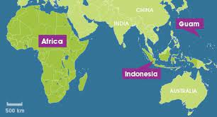
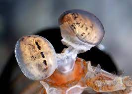

Fatos sobre o Stomatopoda
O camarão mantis é um crustáceo estomatópode, também conhecido como tamarutaca, lacraia-do-mar, lagosta-boxeadora ou camarão-louva-a-deus-palhaço. Dentre 400 espécies, o ‘Odontodactylus scyllarus’ é o que desfere um golpe mais violento: seu soco chega a 80 quilômetros por hora, aceleração semelhante a uma arma calibre.
Classificação científica - Latreille, 1817:
| Reino: | Animalia |
| Filo: | Arthropoda |
| Subfilo: | Crustacea |
| Classe: | Malacostraca |
| Subclasse: | Hoplocarida |
| Ordem: | Stomatopoda |
Um pequeno animal, mas com uma força surpreendente
Com uma pressão resultante de 60 quilos por centímetro quadrado, o bicho consegue facilmente quebrar a carapaça de um caranguejo – ou até mesmo o vidro de um aquário, em alguns casos. Há espécies de tamarutacas no litoral brasileiro. Mas o Odontodactylus scyllarus habita a região do Indo-Pacífico, de Guam até a África Oriental.
O camarão mantis possui uma super visão
Muito além de suas peculiaridades motoras, o Camarão Mantis apresenta uma extensa gama de características únicas. A mais emblemática delas, é o fato de que possui o mais complexo sistema de visão de cores do mundo animal, conseguindo processar 16 cores ao todo.
Enquanto nós humanos conseguimos processar somente três tipos de cores primárias (vermelho, verde e azul), esse distinto animal é capaz de enxergar 12 cores primárias porque possui 12 cones de percepção de cor. Os quatro cones restantes, lhe permite enxergar imagens multiespectrais, como a luz ultravioleta.
Mais duro que o adamantium?
Em artigo publicado na última semana no jornal iScience, pesquisadores explicam o que acontece no organismo desse crustáceo e como funciona seus apêndices que, tais e quais porretes, são capazes do mais poderoso golpe do reino animal.
Em linhas gerais, a pesquisa demonstrou que o golpe do camarão funciona graças a uma estrutura que armazena e libera energia. São duas camadas feitas de diferentes materiais.
“A estrutura orgânica é carregada elasticamente pela flexão, de tal forma que a camada superior é comprimida enquanto a camada inferior é esticada.”
“Trata-se essencialmente de uma estrutura de duas camadas: uma superior, feita de biocerâmica (carbonato de cálcio amorfo), e uma inferior, de biopolímero (quitina e proteínas)”, explicou ao UOL o pesquisador Ali Miserez, professor da Universidade de Tecnologia de Nanyang, em Singapura, principal autor do estudo.
olhinhos pequenos
cores exóticas

antenas estilosas
carisma, superforça, supervisão?!...Ops!
Refências Bibliográficas